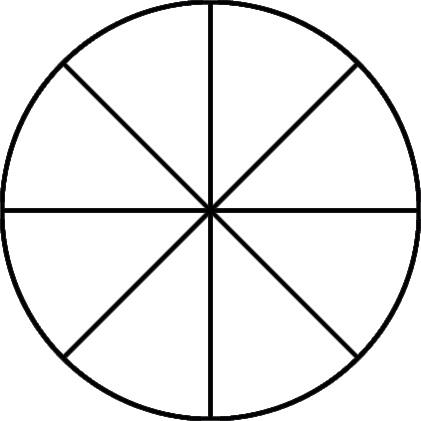
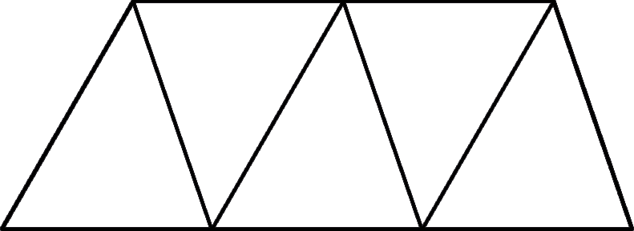
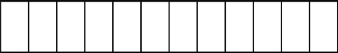
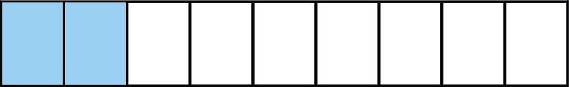
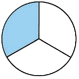

(c)

(d)

(e)

6.
Write the fractions which represent the shaded parts of the drawings (a) to (d).
(a)
Blue circles shown out of the total circles.
(b)

(c)

(d)
7.
Musa divided a soap bar into four equal pieces.
He gave one piece to his sister.
What fraction of the bar did he give to his sister?
8.
What is the fraction of two goats out of six goats?
9.
There are eight mangoes, two of them are rotten.
What is the fraction of the rotten mangoes?
10.
A farmer picked six papayas and wants to distribute them equally to his three children.
What fraction of all the papayas will each child get?
11.
Selemani had one papaya.
He decided to divide the papaya into three equal pieces with his two friends.
What part of the papaya did each of them get?